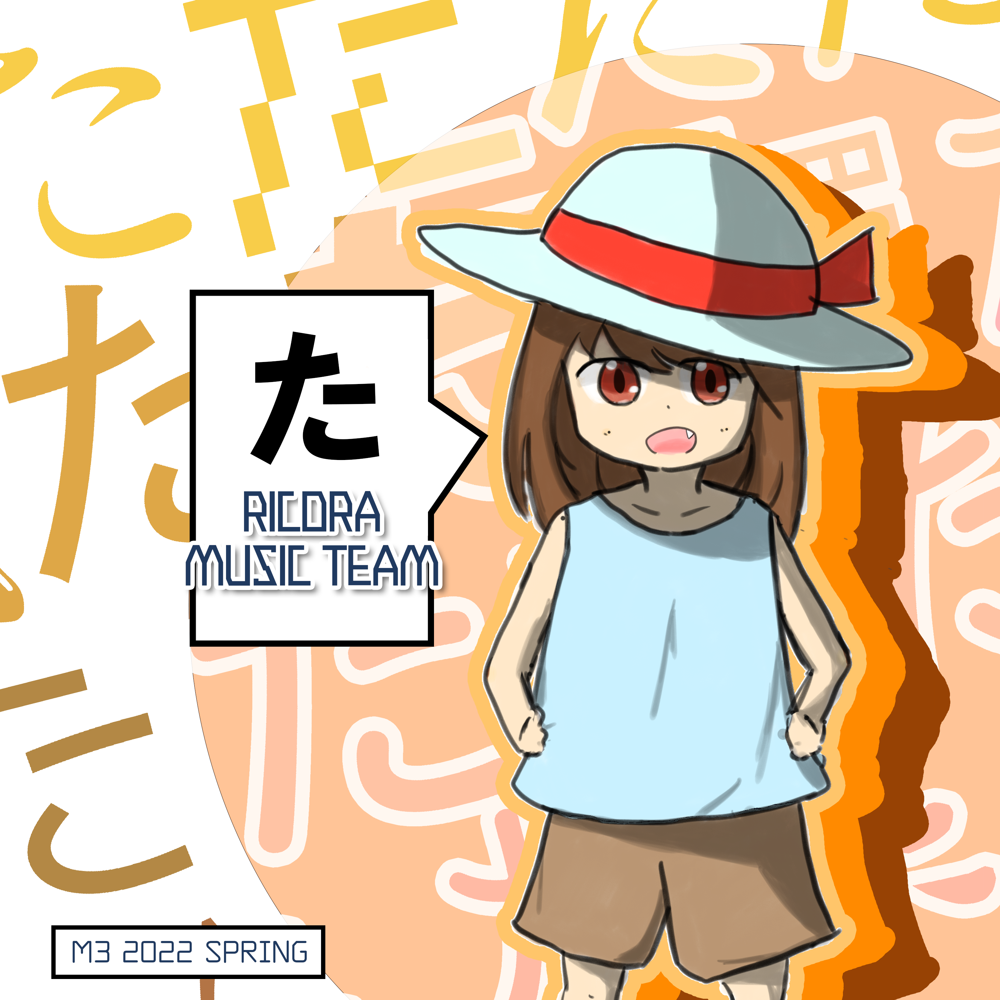

Concept
RICORA MUSIC TEAMが送る新作コンピレーションアルバム！
誰が言い出したか曲のタイトルは必ず「た」[ta]([tæ]もセーフ)から始まらないといけない縛りを設けて制作しました。
耽美なる「た」の、旅にも似たタイトルマッチを堪能ください。(？)
誰が言い出したか曲のタイトルは必ず「た」[ta]([tæ]もセーフ)から始まらないといけない縛りを設けて制作しました。
耽美なる「た」の、旅にも似たタイトルマッチを堪能ください。(？)



RICORA MUSIC TEAM
た
Mastering Engineer: YurA
Jacket Design: Yughao
Web Design & Development: MoAI
Price: 500yen
M32022春 第二展示場2階 ク23-b
にて頒布！
Crossfade